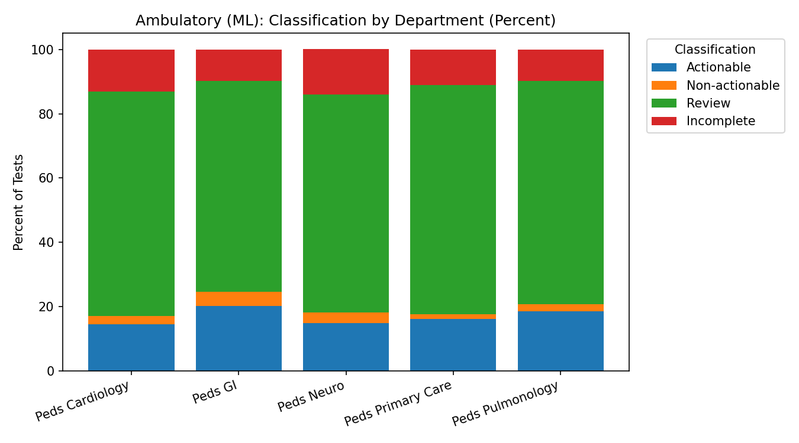
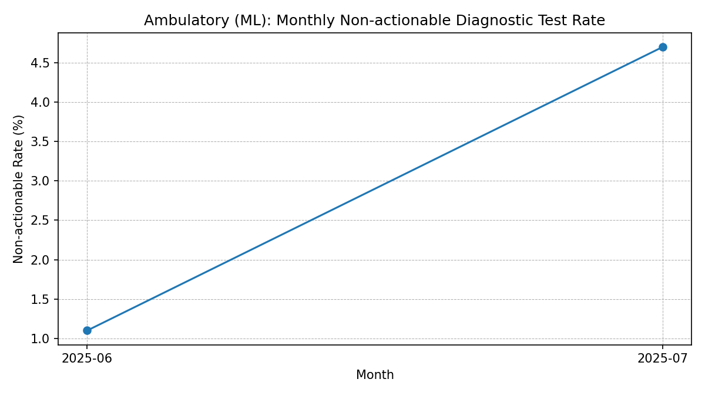

Model:
RandomForest (multiclass)
Rows:
700
Path:
/ml/index.html

ML-predicted classification distribution by department.

ML-predicted monthly non-actionable rate.
Download Data
ambulatory_tests_raw_amb.csv
ambulatory_tests_processed_amb.csv
summary_by_department_amb.csv
monthly_non_actionable_rate_amb.csv
This ML page is a side-by-side demo and does not replace your main dashboard.